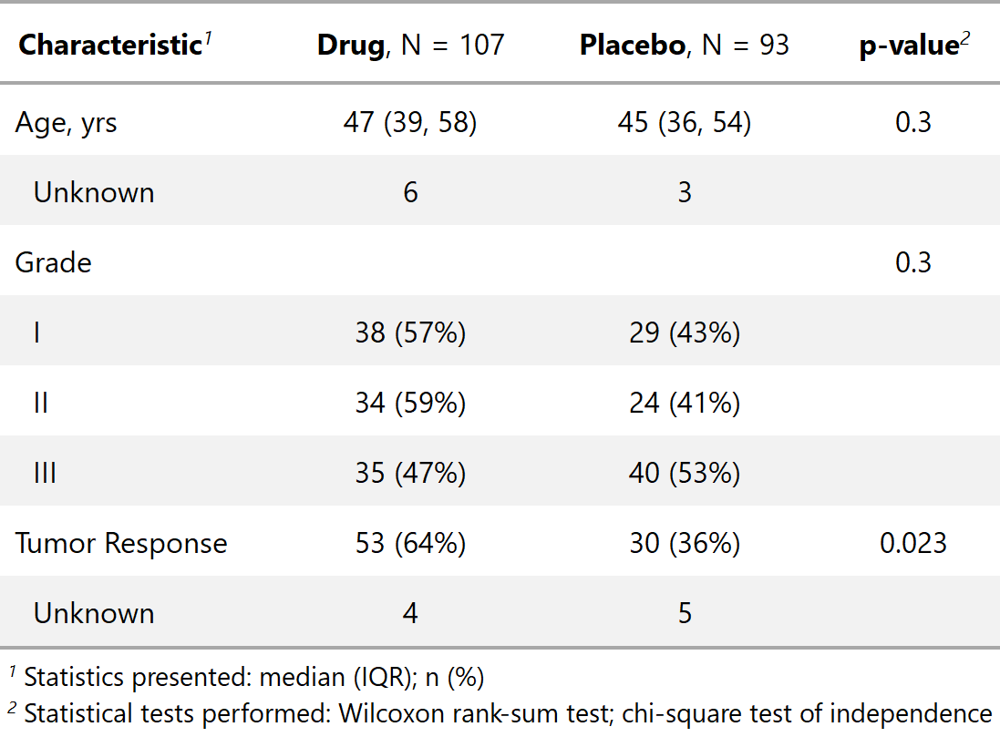

add_p.RdAdds p-values to tables created by tbl_summary by comparing values across groups.
add_p(x, test = NULL, pvalue_fun = NULL, group = x$inputs$group, include = NULL, exclude = NULL)
| x | Object with class |
|---|---|
| test | List of formulas specifying statistical tests to perform,
e.g.
Tests default to |
| pvalue_fun | Function to round and format p-values.
Default is style_pvalue.
The function must have a numeric vector input (the numeric, exact p-value),
and return a string that is the rounded/formatted p-value (e.g.
|
| group | Column name of an ID or grouping variable for which summary
statistics should not be printed. The column may be used in add_p to
calculate p-values with correlated data. Default is |
| include | Names of variables to include in output. |
| exclude | Names of variables to exclude from output. |
A tbl_summary object
If you like to consistently use a different function to format p-values or
estimates, you can set options in the script or in the user- or
project-level startup file, '.Rprofile'. The default confidence level can
also be set. Please note the default option for the estimate is the same
as it is for tbl_regression().

See tbl_summary vignette for detailed examples
Other tbl_summary tools: add_n,
add_overall,
add_q.tbl_summary,
add_stat_label,
bold_italicize_labels_levels,
bold_p.tbl_summary,
inline_text.tbl_summary,
modify_header,
sort_p.tbl_summary,
tbl_summary
add_comp_ex1 <- trial %>% dplyr::select(age, grade, response, trt) %>% tbl_summary(by = trt) %>% add_p() # Conduct a custom McNemar test for response, # The custom function must return a single p-value, or NA add_p_test.mcnemar <- function(data, variable, by, ...) { stats::mcnemar.test(data[[variable]], data[[by]])$p.value } trial %>% dplyr::select(age, grade, response, trt) %>% tbl_summary(by = trt) %>% add_p(test = "response" ~ "mcnemar")#> #>#> <style>html { #> font-family: -apple-system, BlinkMacSystemFont, 'Segoe UI', Roboto, Oxygen, Ubuntu, Cantarell, 'Helvetica Neue', 'Fira Sans', 'Droid Sans', Arial, sans-serif; #> } #> #> #mwlefoodfi .gt_table { #> display: table; #> border-collapse: collapse; #> margin-left: auto; #> margin-right: auto; #> color: #333333; #> font-size: 16px; #> background-color: #FFFFFF; #> /* table.background.color */ #> width: auto; #> /* table.width */ #> border-top-style: solid; #> /* table.border.top.style */ #> border-top-width: 2px; #> /* table.border.top.width */ #> border-top-color: #A8A8A8; #> /* table.border.top.color */ #> border-bottom-style: solid; #> /* table.border.bottom.style */ #> border-bottom-width: 2px; #> /* table.border.bottom.width */ #> border-bottom-color: #A8A8A8; #> /* table.border.bottom.color */ #> } #> #> #mwlefoodfi .gt_heading { #> background-color: #FFFFFF; #> /* heading.background.color */ #> border-bottom-color: #FFFFFF; #> } #> #> #mwlefoodfi .gt_title { #> color: #333333; #> font-size: 125%; #> /* heading.title.font.size */ #> padding-top: 4px; #> /* heading.top.padding - not yet used */ #> padding-bottom: 4px; #> border-bottom-color: #FFFFFF; #> border-bottom-width: 0; #> } #> #> #mwlefoodfi .gt_subtitle { #> color: #333333; #> font-size: 85%; #> /* heading.subtitle.font.size */ #> padding-top: 0; #> padding-bottom: 4px; #> /* heading.bottom.padding - not yet used */ #> border-top-color: #FFFFFF; #> border-top-width: 0; #> } #> #> #mwlefoodfi .gt_bottom_border { #> border-bottom-style: solid; #> /* heading.border.bottom.style */ #> border-bottom-width: 2px; #> /* heading.border.bottom.width */ #> border-bottom-color: #D3D3D3; #> /* heading.border.bottom.color */ #> } #> #> #mwlefoodfi .gt_column_spanner { #> border-bottom-style: solid; #> border-bottom-width: 2px; #> border-bottom-color: #D3D3D3; #> padding-top: 4px; #> padding-bottom: 4px; #> } #> #> #mwlefoodfi .gt_col_heading { #> color: #333333; #> background-color: #FFFFFF; #> /* column_labels.background.color */ #> font-size: 16px; #> /* column_labels.font.size */ #> font-weight: initial; #> /* column_labels.font.weight */ #> vertical-align: middle; #> padding: 5px; #> margin: 10px; #> overflow-x: hidden; #> } #> #> #mwlefoodfi .gt_columns_top_border { #> border-top-style: solid; #> border-top-width: 2px; #> border-top-color: #D3D3D3; #> } #> #> #mwlefoodfi .gt_columns_bottom_border { #> border-bottom-style: solid; #> border-bottom-width: 2px; #> border-bottom-color: #D3D3D3; #> } #> #> #mwlefoodfi .gt_sep_right { #> border-right: 5px solid #FFFFFF; #> } #> #> #mwlefoodfi .gt_group_heading { #> padding: 8px; #> /* row_group.padding */ #> color: #333333; #> background-color: #FFFFFF; #> /* row_group.background.color */ #> font-size: 16px; #> /* row_group.font.size */ #> font-weight: initial; #> /* row_group.font.weight */ #> border-top-style: solid; #> /* row_group.border.top.style */ #> border-top-width: 2px; #> /* row_group.border.top.width */ #> border-top-color: #D3D3D3; #> /* row_group.border.top.color */ #> border-bottom-style: solid; #> /* row_group.border.bottom.style */ #> border-bottom-width: 2px; #> /* row_group.border.bottom.width */ #> border-bottom-color: #D3D3D3; #> /* row_group.border.bottom.color */ #> vertical-align: middle; #> } #> #> #mwlefoodfi .gt_empty_group_heading { #> padding: 0.5px; #> color: #333333; #> background-color: #FFFFFF; #> /* row_group.background.color */ #> font-size: 16px; #> /* row_group.font.size */ #> font-weight: initial; #> /* row_group.font.weight */ #> border-top-style: solid; #> /* row_group.border.top.style */ #> border-top-width: 2px; #> /* row_group.border.top.width */ #> border-top-color: #D3D3D3; #> /* row_group.border.top.color */ #> border-bottom-style: solid; #> /* row_group.border.bottom.style */ #> border-bottom-width: 2px; #> /* row_group.border.bottom.width */ #> border-bottom-color: #D3D3D3; #> /* row_group.border.bottom.color */ #> vertical-align: middle; #> } #> #> #mwlefoodfi .gt_striped { #> background-color: #8080800D; #> } #> #> #mwlefoodfi .gt_from_md > :first-child { #> margin-top: 0; #> } #> #> #mwlefoodfi .gt_from_md > :last-child { #> margin-bottom: 0; #> } #> #> #mwlefoodfi .gt_row { #> padding: 8px; #> /* row.padding */ #> margin: 10px; #> border-bottom-style: solid; #> border-bottom-width: thin; #> border-bottom-color: #D3D3D3; #> vertical-align: middle; #> overflow-x: hidden; #> } #> #> #mwlefoodfi .gt_stub { #> border-right-style: solid; #> border-right-width: 2px; #> border-right-color: #D3D3D3; #> padding-left: 12px; #> } #> #> #mwlefoodfi .gt_summary_row { #> color: #333333; #> background-color: #FFFFFF; #> /* summary_row.background.color */ #> padding: 8px; #> /* summary_row.padding */ #> text-transform: inherit; #> /* summary_row.text_transform */ #> } #> #> #mwlefoodfi .gt_grand_summary_row { #> color: #333333; #> background-color: #FFFFFF; #> /* grand_summary_row.background.color */ #> padding: 8px; #> /* grand_summary_row.padding */ #> text-transform: inherit; #> /* grand_summary_row.text_transform */ #> } #> #> #mwlefoodfi .gt_first_summary_row { #> border-top-style: solid; #> border-top-width: 2px; #> border-top-color: #D3D3D3; #> } #> #> #mwlefoodfi .gt_first_grand_summary_row { #> border-top-style: double; #> border-top-width: 6px; #> border-top-color: #D3D3D3; #> } #> #> #mwlefoodfi .gt_table_body { #> border-top-style: solid; #> /* table_body.border.top.style */ #> border-top-width: 2px; #> /* table_body.border.top.width */ #> border-top-color: #D3D3D3; #> /* table_body.border.top.color */ #> border-bottom-style: solid; #> /* table_body.border.bottom.style */ #> border-bottom-width: 2px; #> /* table_body.border.bottom.width */ #> border-bottom-color: #D3D3D3; #> /* table_body.border.bottom.color */ #> } #> #> #mwlefoodfi .gt_footnotes { #> border-top-style: solid; #> /* footnotes.border.top.style */ #> border-top-width: 2px; #> /* footnotes.border.top.width */ #> border-top-color: #D3D3D3; #> /* footnotes.border.top.color */ #> } #> #> #mwlefoodfi .gt_footnote { #> font-size: 90%; #> /* footnote.font.size */ #> margin: 0px; #> padding: 4px; #> /* footnote.padding */ #> } #> #> #mwlefoodfi .gt_sourcenotes { #> border-top-style: solid; #> /* sourcenotes.border.top.style */ #> border-top-width: 2px; #> /* sourcenotes.border.top.width */ #> border-top-color: #D3D3D3; #> /* sourcenotes.border.top.color */ #> } #> #> #mwlefoodfi .gt_sourcenote { #> font-size: 90%; #> /* sourcenote.font.size */ #> padding: 4px; #> /* sourcenote.padding */ #> } #> #> #mwlefoodfi .gt_center { #> text-align: center; #> } #> #> #mwlefoodfi .gt_left { #> text-align: left; #> } #> #> #mwlefoodfi .gt_right { #> text-align: right; #> font-variant-numeric: tabular-nums; #> } #> #> #mwlefoodfi .gt_font_normal { #> font-weight: normal; #> } #> #> #mwlefoodfi .gt_font_bold { #> font-weight: bold; #> } #> #> #mwlefoodfi .gt_font_italic { #> font-style: italic; #> } #> #> #mwlefoodfi .gt_super { #> font-size: 65%; #> } #> #> #mwlefoodfi .gt_footnote_marks { #> font-style: italic; #> font-size: 65%; #> } #> </style> #> <div id="mwlefoodfi" style="overflow-x:auto;overflow-y:auto;width:auto;height:auto;"><table class="gt_table"> #> #> <tr> #> <th class="gt_col_heading gt_columns_bottom_border gt_columns_top_border gt_left" rowspan="1" colspan="1"><strong>Characteristic</strong><sup class="gt_footnote_marks">1</sup></th> #> <th class="gt_col_heading gt_columns_bottom_border gt_columns_top_border gt_center" rowspan="1" colspan="1"><strong>Drug</strong>, N = 107</th> #> <th class="gt_col_heading gt_columns_bottom_border gt_columns_top_border gt_center" rowspan="1" colspan="1"><strong>Placebo</strong>, N = 93</th> #> <th class="gt_col_heading gt_columns_bottom_border gt_columns_top_border gt_center" rowspan="1" colspan="1"><strong>p-value</strong><sup class="gt_footnote_marks">2</sup></th> #> </tr> #> <body class="gt_table_body"> #> <tr> #> <td class="gt_row gt_left">Age, yrs</td> #> <td class="gt_row gt_center">47 (39, 58)</td> #> <td class="gt_row gt_center">45 (36, 54)</td> #> <td class="gt_row gt_center">0.3</td> #> </tr> #> <tr> #> <td class="gt_row gt_left gt_striped" style="text-align: left; text-indent: 10px;">Unknown</td> #> <td class="gt_row gt_center gt_striped">6</td> #> <td class="gt_row gt_center gt_striped">3</td> #> <td class="gt_row gt_center gt_striped"></td> #> </tr> #> <tr> #> <td class="gt_row gt_left">Grade</td> #> <td class="gt_row gt_center"></td> #> <td class="gt_row gt_center"></td> #> <td class="gt_row gt_center">0.3</td> #> </tr> #> <tr> #> <td class="gt_row gt_left gt_striped" style="text-align: left; text-indent: 10px;">I</td> #> <td class="gt_row gt_center gt_striped">38 (36%)</td> #> <td class="gt_row gt_center gt_striped">29 (31%)</td> #> <td class="gt_row gt_center gt_striped"></td> #> </tr> #> <tr> #> <td class="gt_row gt_left" style="text-align: left; text-indent: 10px;">II</td> #> <td class="gt_row gt_center">34 (32%)</td> #> <td class="gt_row gt_center">24 (26%)</td> #> <td class="gt_row gt_center"></td> #> </tr> #> <tr> #> <td class="gt_row gt_left gt_striped" style="text-align: left; text-indent: 10px;">III</td> #> <td class="gt_row gt_center gt_striped">35 (33%)</td> #> <td class="gt_row gt_center gt_striped">40 (43%)</td> #> <td class="gt_row gt_center gt_striped"></td> #> </tr> #> <tr> #> <td class="gt_row gt_left">Tumor Response</td> #> <td class="gt_row gt_center">53 (51%)</td> #> <td class="gt_row gt_center">30 (34%)</td> #> <td class="gt_row gt_center"></td> #> </tr> #> <tr> #> <td class="gt_row gt_left gt_striped" style="text-align: left; text-indent: 10px;">Unknown</td> #> <td class="gt_row gt_center gt_striped">4</td> #> <td class="gt_row gt_center gt_striped">5</td> #> <td class="gt_row gt_center gt_striped"></td> #> </tr> #> </body> #> #> <tfoot> #> <tr class="gt_footnotes"> #> <td colspan="4"> #> <p class="gt_footnote"> #> <sup class="gt_footnote_marks"> #> <em>1</em> #> </sup> #> #> Statistics presented: median (IQR); n (%) #> <br /> #> </p> #> <p class="gt_footnote"> #> <sup class="gt_footnote_marks"> #> <em>2</em> #> </sup> #> #> Statistical tests performed: Wilcoxon rank-sum test; chi-square test of independence; NA #> <br /> #> </p> #> </td> #> </tr> #> </tfoot> #> </table></div>